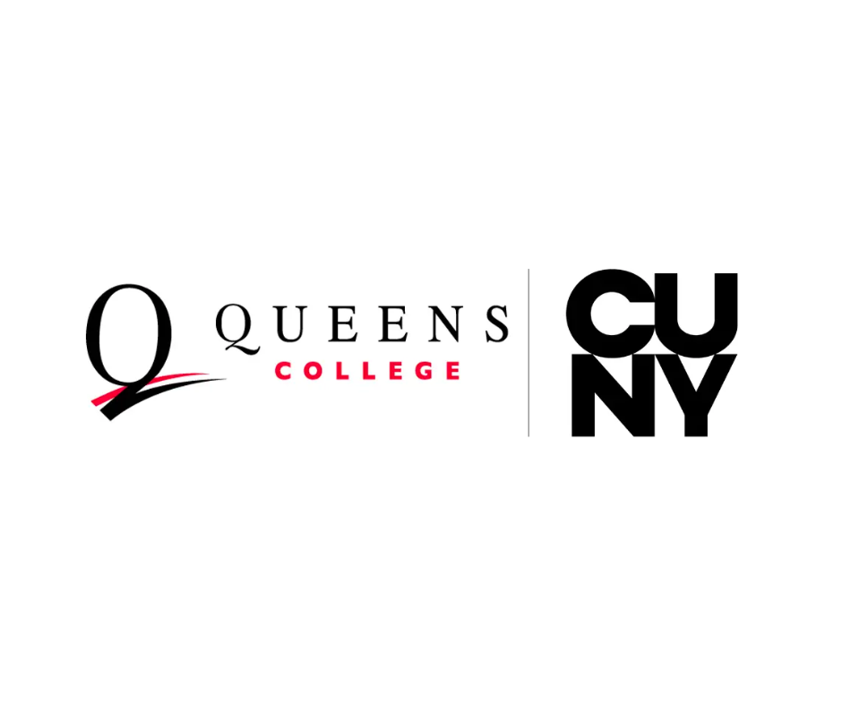

January 2024 – May 2026
GPA: 3.788 / 4.0
Dean's List every semester
Departmental Honors (2026)
Relevant Coursework: Algorithms, Software Engineering, Database Systems, Cloud Computing

August 2021 – May 2023
GPA: 3.9 / 4.0
International Excellence Scholarship Recipient
Relevant Coursework: Data Structures, Computer Networks, Computer Organization
Study Abroad: California State University East Bay (Fall 2022 – Spring 2023)